측량및지형공간정보산업기사 (2017-05-07 기출문제)
1과목: 응용측량
1. 원곡선에서 곡선반지름 R＝200m, 교각 I＝60°, 종단현 편각이 0° 57ʹ 20ʺ 일 경우 종단현의 길이는?
- 2.676m
- 3.287m
- 6.671m
- 13.342m
(정답률: 62%)

2. 터널측량의 작업 순서로 옳은 것은?
- 답사－예측－지표설치－지하설치
- 예측－지표설치－답사－지하설치
- 답사－지하설치－예측－지표설치
- 예측－답사－지하설치－지표설치
(정답률: 69%)
3. 클로소이드 매개변수 A＝60m인 곡선에서 곡선길이 L＝30m일 때 곡선 반지름(R)은?
- 60m
- 90m
- 120m
- 150m
(정답률: 68%)
4. 달, 태양 등의 기조력과 기압, 바람 등에 의해서 일어나는 해수면의 주기적 승강현상을 연속 관측하는 것은?
- 수온관측
- 해류관측
- 음속관측
- 조석관측
(정답률: 80%)
5. 다음 중 댐 건설을 위한 조사측량에서 댐사이트의 평면도 작성에 가장 적합한 측량방법은?
- 평판측량
- 시거측량
- 간접 수준 측량
- 지상사진측량 또는 항공사진측량
(정답률: 64%)
6. 지하시설물 측량 방법 중 전자기파가 반사되는 성질을 이용하여 지중의 각종 현상을 밝히는 방법은?
- 전자유도 측량법
- 지중레이더 측량법
- 음파 측량법
- 자기관측법
(정답률: 79%)
7. 유량 및 유속측정의 관측 장소 선정을 위한 고려사항으로 틀린 것은?
- 직류부로 흐름이 일정하고 하상의 요철이 적으며 하상 경사가 일정한 곳
- 수위의 변화에 의해 하천 횡단면 형상이 급변하고 와류(渦流)가 일어나는 곳
- 관측장소 상·하류의 유로가 일정한 단면을 갖는 곳
- 관측이 편리한 곳
(정답률: 84%)
8. 하나의 터널을 완성하기 위해서는 계획·설계·시공 등의 작업과정을 거쳐야 한다. 다음 중 터널의 시공과정 중에 주로 이루어지는 측량은?
- 지형측량
- 세부측량
- 터널 외 기준점 측량
- 터널 내 측량
(정답률: 65%)
9. 그림과 같은 지역의 토공량은? (단, 분할된 격자의 가로×세로 크기는 모두 같다.)
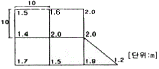
- 787.5m3
- 880.5m3
- 970.5m3
- 952.5m3
(정답률: 49%)
10. 하천측량에서 평면측량의 범위에 대한 설명으로 틀린 것은?
- 유제부는 제외지만을 범위로 한다.
- 무제부는 홍수 영향 구역보다 약간 넓게 한다.
- 홍수방제를 위한 하천공사에서는 하구에서부터 상류의 홍수피해가 미치는 지점까지로 한다.
- 사방공사의 경우에는 수원지까지 포함한다.
(정답률: 64%)
11. 도로시점으로부터 교점(I.P)까지의 거리가 850m이고 접선장(T.L)이 185m인 원곡선의 시단현 길이는? (단, 중심말뚝의 간격＝20m)
- 20m
- 15m
- 10m
- 5m
(정답률: 55%)
12. 누가토량을 곡선으로 표시한 것을 유토곡선(mass curve)이라고 한다. “유토곡선에서 하향 구간은 (A)구간이고 상향구간은 (B)구간을 나타낸다.”에서 (A), (B)가 알맞게 짝지어진 것은?
- A：성토, B：절토
- A：절토, B：성토
- A：성토와 절토의 균형, B：절토
- A：성토와 절토의 교차, B：성토
(정답률: 71%)
13. 삼각형 세변의 길이 a, b, c를 알 때 면적 A를 구하는 식으로 옳은 것은? (단, S=a+b+c/2 이다.)
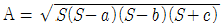
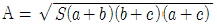
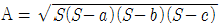
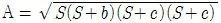
(정답률: 82%)
14. 지하시설물측량 및 그 대상에 대한 설명으로 틀린 것은?
- 지하시설물측량은 도면 작성 및 검수에 초기 비용이 일반 지상측량에 비해 적게 든다.
- 도시의 지하시설물은 주로 상수도, 하수도, 전기선, 전화선, 가스선 등으로 이루어진다.
- 지하시설물과 연결되어 지상으로 노출된 각종 맨홀 등의 가공선에 대한 자료 조사 및 관측 작업도 포함된다.
- 지중레이더관측법, 음파관측법 등 다양한 방법이 사용된다.
(정답률: 82%)
15. 캔트(cant)의 계산에서 속도 및 반지름을 모두 2배로 할 때 캔트의 크기 변화는?
- 1/4로 감소
- 1/2로 감소
- 2배로 증가
- 4배로 증가
(정답률: 55%)
16. 심프슨 법칙에 대한 설명으로 옳지 않은 것은?
- 심프슨의 제1법칙은 경계선을 2차 포물선으로 보고, 지거의 두 구간을 한 조로 하여 면적을 계산한다.
- 심프슨의 제2법칙은 지거의 두 구간을 한 조로 하여 경계선을 3차 포물선으로 보고 면적을 계산한다.
- 심프슨의 제1법칙은 구간의 개수가 홀수인 경우 마지막 구간을 사다리꼴 공식으로 계산하여 더해 준다.
- 심프슨 법칙을 이용하는 경우, 지거 간격은 균등하게 하여야 한다.
(정답률: 64%)
17. 종단곡선을 곡선반지름이 1000m인 원곡선으로 설치할 경우, 시점으로부터 30m 지점의 종거는?
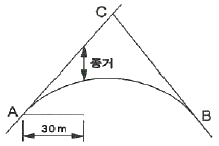
- 1.65m
- 1.12m
- 0.90m
- 0.45m
(정답률: 34%)
18. 그림과 같이 곡선 반지름 R＝200m인 단곡선의 첫 번째 측점 P를 측설하기 위하여 E.C에서 관측할 각도(δ)는? (단, 교각 I＝120°, 중심말뚝간격＝20m, 시단현의 거리＝13.96m)
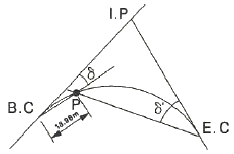
- 약 50°
- 약 54°
- 약 58°
- 약 62°
(정답률: 34%)
19. 삼각형법에 의한 면적계산 방법이 아닌 것은?
- 삼변법
- 좌표법
- 두 변과 협각에 의한 방법
- 삼사법
(정답률: 58%)
20. 디지털 구적기로 면적을 측정하였다. 축척 1：500 도면을 1：1000으로 잘못 세팅하여 측정하였더니 50m2이었다면 실제 면적은?
- 12.5m2
- 25.0m2
- 100.0m2
- 200.0m2
(정답률: 49%)
2과목: 사진측량 및 원격탐사
21. 촬영고도 800m, 초점거리 153mm이고 중복도 65%로 연직촬영된 사진의 크기로 23cm×23cm인 한 쌍의 항공사진이 있다. 철탑의 하단부 시차가 14.8mm, 상단부 시차가 15.3mm이었다면 철탑의 실제 높이는?
- 5m
- 10m
- 15m
- 20m
(정답률: 40%)
22. 격자의 수치표고모형(Raster DEM)과 비교할 때, 불규칙 삼각망 수치표고모형(Triangulated Irregular Networks DEM)의 특징으로 옳은 것은?
- 표고 값만 저장되므로 자료량이 적다.
- 밝기값(gray value)으로 표고를 나타낼 수 있다.
- 불연속선을 삼각형의 한 변으로 나타낼 수 있다.
- 보간에 의해 만들어진 2차원 자료이다.
(정답률: 59%)
23. 카메라의 초점거리가 160mm이고, 사진크기가 18cm×18cm인 연직사진측량을 하였을 때 기선고도비는? (단, 종중복 60%, 사진축척은 1：2000이다.)
- 0.45
- 0.55
- 0.65
- 0.75
(정답률: 47%)
24. 표정 중 종시차를 소거하여 목표지형물의 상대적 위치를 맞추는 작업은?
- 접합표정
- 내부표정
- 절대표정
- 상호표정
(정답률: 57%)
25. 항공사진의 촬영 시 사진축척과 관련된 내용으로 옳은 것은?
- 초점거리에 비례한다.
- 비행고도와 비례한다.
- 촬영속도에 비례한다.
- 초점거리의 제곱에 비례한다.
(정답률: 55%)
26. 항측용 디지털 카메라에 의한 영상을 이용하여 직접 수치지도를 제작하는 과정에 필요한 과정이 아닌 것은?
- 정위치편집
- 일반화편집
- 구조화편집
- 현지보완측량
(정답률: 33%)
27. 사진의 크기 24cm×18cm, 초점거리 25cm, 촬영고도 5400m일 때 이 사진의 포괄 면적은?
- 25.4km2
- 20.2km2
- 18.8km2
- 10.8km2
(정답률: 56%)
28. 비행속도 190km/h인 항공기에서 초점거리 153mm인 카메라로 어느 시가지를 촬영한 항공사진이 있다. 허용 흔들림량이 사진상에서 0.01mm, 최장 노출시간이 1/250초, 사진크기가 23cm×23cm일 때 이 사진상에서 연직점으로부터 7cm 떨어진 위치에 있는, 실제 높이가 120m인 건물의 기복변위는?
- 2.4mm
- 2.6mm
- 2.8mm
- 3.0mm
(정답률: 29%)
29. 탐측기(sensor)의 종류 중 능동적 탐측기(active sensor)에 해당되는 것은?
- RBV(Return Beam Vidicon)
- MSS(Multi Spectral Scanner)
- SAR(Synthetic Aperture Radar)
- TM(Thematic Mapper)
(정답률: 72%)
30. 사진을 조정의 기본단위로 하는 항공삼각측량 방법은?
- 광속(번들)조정법
- 독립입체모형법
- 다항식법
- 스트립조정법
(정답률: 74%)
31. 비행고도가 일정할 때에 보통각, 광각, 초광각의 세 가지 카메라로서 사진을 찍을 때에 사진축척이 가장 작은 것은?
- 보통각 사진
- 광각 사진
- 초광각 사진
- 축척은 모두 같다.
(정답률: 68%)
32. 회전주기가 일정한 인공위성을 이용하여 영상을 취득하는 경우에 대한 설명으로 옳지 않은 것은?
- 관측이 좁은 시야각으로 행하여지므로 얻어진 영상은 정사투영영상에 가깝다.
- 관측영상이 수치적 자료이므로 판독이 자동적이고 정량화가 가능하다.
- 회전 주기가 일정하므로 반복적인 관측이 가능하다.
- 필요한 시점의 영상을 신속하게 수신할 수 있다.
(정답률: 57%)
33. 원격탐사에서 영상자료의 기하보정이 필요한 경우가 아닌 것은?
- 다른 파장대의 영상을 중첩하고자 할 때
- 지리적인 위치를 정확히 구하고자 할 때
- 다른 일시 또는 센서로 취한 같은 장소의 영상을 중첩하고자 할 때
- 영상의 질을 높이거나 태양입사각 및 시야각에 의해 영향을 보정할 때
(정답률: 47%)
34. 항공사진측량에 관한 설명으로 옳은 것은?
- 항공사진측량은 주로 지형도 제작을 목적으로 수행된다.
- 항공사진측량은 좁은 지역에서도 능률적이며 경제적이다.
- 항공사진측량은 기상 조건의 제약을 거의 받지 않는다.
- 항공사진측량은 지상 기준점 측량이 필요없다.
(정답률: 62%)
35. 사진측량의 표정점 종류가 아닌 것은?
- 접합점
- 자침점
- 등각점
- 자연점
(정답률: 53%)
36. 어느 지역의 영상으로부터 “논”의 훈련지역(training field)을 선택하여 해당 영상소를 “P”로 표기하였다. 이때 산출되는 통계값과 사변형 분류법(parallelepiped classification)을 이용하여 “논”을 분류한 결과로 적당한 것은?
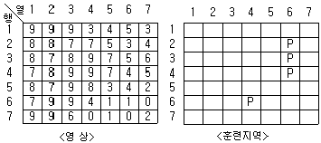
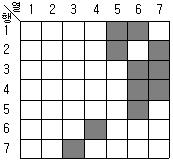
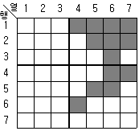
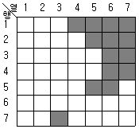
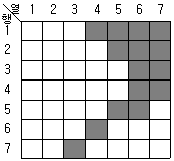
(정답률: 58%)
37. 사진측량의 촬영방향에 의한 분류에 대한 설명으로 옳지 않은 것은?
- 수직사진－광축이 연직선과 일치하도록 공중에서 촬영한 사진
- 수렴사진－광축이 서로 평행하게 촬영한 사진
- 수평사진－광축이 수평선과 거의 일치하도록 지상에서 촬영한 사진
- 경사사진－광축이 연직선과 경사지도록 공중에서 촬영한 사진
(정답률: 63%)
38. 정합의 대상기준에 따른 영상정합의 분류에 해당되지 않는 것은?
- 영역 기준 정합
- 객체형 정합
- 형상 기준 정합
- 관계형 정합
(정답률: 57%)
39. 다음 중 우리나라 위성으로 옳은 것은?
- IKONOS
- LANDSAT
- KOMPSAT
- IRS
(정답률: 71%)
40. 일반카메라와 비교할 때, 항공사진측량용 카메라의 특징에 대한 설명으로 옳지 않은 것은?
- 렌즈의 왜곡이 적다.
- 해상력과 선명도가 높다.
- 렌즈의 피사각이 크다.
- 초점거리가 짧다.
(정답률: 70%)
3과목: GIS 및 GPS
41. 지리정보시스템(GIS)의 공간분석에서 선형 공간객체의 특성을 이용한 관망(Network)분석기법으로 가능한 분석과 거리가 가장 먼 것은?
- 댐 상류의 유량 추적 및 오염 발생이 하류에 미치는 영향 분석
- 하나의 지점에서 다른 지점으로 이동 시 최적 경로의 선정
- 특정 주거지역의 면적 산정과 인구 파악을 통한 인구밀도의 계산
- 창고나 보급소, 경찰서, 소방서와 같은 주요 시설물의 위치선정
(정답률: 71%)
42. 지리정보시스템(GIS) 구축에 대한 용어 설명으로 옳지 않은 것은?
- 변환－구축된 자료 중에서 필요한 자료를 쉽게 찾아낸다.
- 분석－자료를 특성별로 분류하여 자료가 내포하는 의미를 찾아낸다.
- 저장－수집된 자료를 전산자료로 저장한다.
- 수집－필요한 자료를 획득한다.
(정답률: 82%)
43. GPS의 위성신호 중 주파수가 1575.42MHz인 L1의 50000파장에 해당되는 거리는? (단, 광속＝300000km/s로 가정한다.)
- 6875.23m
- 9521.27m
- 10002.89m
- 15754.20m
(정답률: 49%)
44. 항공사진측량에 의한 작업 공정에 따른 수치지도 제작 순서로 옳게 나열된 것은?
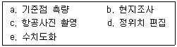
- c－a－b－e－d
- c－a－e－b－d
- c－b－a－d－e
- c－e－a－b－d
(정답률: 29%)
45. 그림의 2차원 쿼드트리(quadtree)의 총 면적은? (단, 최하단에서 하나의 셀의 면적을 2로 가정)
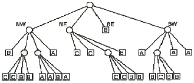
- 16
- 25
- 64
- 128
(정답률: 52%)
46. 메타데이터(Metadata)에 대한 설명으로 거리가 먼 것은?
- 일련의 자료에 대한 정보로서 자료를 사용하는 데 필요하다.
- 자료를 생산, 유지, 관리하는 데 필요한 정보를 담고 있다.
- 자료에 대한 내용, 품질, 사용조건 등을 알 수 있다.
- 정확한 정보를 유지하기 위해 수정 및 갱신이 불가능하다.
(정답률: 77%)
47. 지리정보시스템(GIS)의 하드웨어 구성 중 자료 출력 장비가 아닌 것은?
- 플로터
- 프린터
- 자동 제도기
- 해석 도화기
(정답률: 59%)
48. 지리정보시스템(GIS) 표준과 관련된 국제기구는?
- Open Geospatial Consortium
- Open Source Consortium
- Open Scene Graph
- Open GIS Library
(정답률: 68%)
49. 과학기술용 위성 등 저궤도 위성에 탑재된 GNSS 수신기를 이용한 정밀위성궤도 결정과 가장 유사한 지상측량의 방법은?
- 위상데이터를 이용한 이동측위
- 위상데이터를 이용한 정지측위
- 코드데이터를 이용한 이동측위
- 코드데이터를 이용한 정지측위
(정답률: 55%)
50. 지리정보시스템(GIS)의 데이터 처리를 위한 데이터베이스 관리시스템(DBMS)에 대한 설명으로 거리가 가장 먼 것은?
- 복잡한 조건 검색 기능이 불필요하여 구조가 간단하다.
- 자료의 중복 없이 표준화된 형태로 저장되어 있어야 한다.
- 데이터베이스의 내용을 표시할 수 있어야 한다.
- 데이터 보호를 위한 안전관리가 되어 있어야 한다.
(정답률: 63%)
51. 지리정보시스템(GIS)의 특징에 대한 설명으로 틀린 것은?
- 사용자의 요구에 맞는 주제도 제작이 용이하다.
- GIS데이터는 CAD데이터에 비해 형식이 간단하다.
- 수치데이터로 구축되어 지도축척의 변경이 용이하다.
- GIS데이터는 자료의 통계분석과 분석결과에 따라 다양한 지도제작이 가능하다.
(정답률: 72%)
52. GNSS 수신데이터에 대한 공통데이터 포맷은?
- RINEX
- DGPS
- NGIS
- RTCM
(정답률: 77%)
53. 불규칙삼각망(TIN)에 대한 설명으로 옳지 않은 것은?
- 주로 Delaunay 삼각법에 의해 만들어진다.
- 고도값의 내삽에는 사용될 수 없다.
- 경사도, 사면방향, 체적 등을 계산할 수 있다.
- DEM 제작에 사용된다.
(정답률: 67%)
54. 공간분석 위상관계에 대한 설명으로 옳지 않은 것은?
- 위상관계란 공간자료의 상호관계를 정의한다.
- 위상관계란 인접한 점, 선, 면 사이의 공간적 관계를 나타낸다.
- 위상관계란 공간객체와 속성정보의 연결을 의미한다.
- 위상관계에서 한 노드(Node)를 공유하는 모든 아크(Arc)는 상호연결성의 존재가 반드시 필요하다.
(정답률: 41%)
55. GNSS 측량과 수준측량에 의한 높이값의 관계를 나타낸 내용이다. ( ) 안에 가장 적합한 용어가 순서대로 나열된 것은?
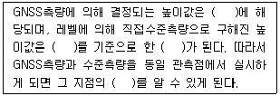
- 표고－타원체－지오이드고－비고
- 지오이드고－타원체－비고－표고
- 타원체고－타원체－지오이드고－표고
- 타원체고－지오이드－표고－지오이드고
(정답률: 50%)
56. 수치지형모델 중의 한 유형인 수치표고모델(DEM)의 활용과 거리가 가장 먼 것은?
- 토지피복도(Land Cover Map)
- 3차원 조망도(Perspective View)
- 음영기복도(Shaded Relief Map)
- 경사도(Slope Map)
(정답률: 63%)
57. 벡터구조의 특징으로 옳지 않은 것은?
- 그래픽의 정확도가 높다.
- 복잡한 현실 세계의 구체적 묘사가 가능하다.
- 자료구조가 단순하다.
- 데이터 용량의 축소가 용이하다.
(정답률: 73%)
58. 벡터 데이터 취득방법이 아닌 것은?
- 매뉴얼 디지타이징(manual digitizing)
- 헤드업 디지타이징(head-up digitizing)
- COGO 데이터 입력(COGO input)
- 래스터라이제이션(Rasterization)
(정답률: 68%)
59. GNSS를 이용한 측량 분야의 활용으로 거리가 가장 먼 것은?
- 해양 작업선의 위치 결정
- 택배 운송차량의 위치 정보 확인
- 터널 내의 선형 및 단면 측량
- 댐, 교량 등의 변위 측량
(정답률: 67%)
60. 지리정보시스템(GIS)의 기능과 거리가 먼 것은?
- 데이터 획득 및 저장
- 데이터 관리 및 검색
- 데이터 유통 및 가격 결정
- 데이터 분석 및 표현
(정답률: 85%)
4과목: 측량학
61. A, B점 간의 고저차를 구하기 위해 그림과 같이 (1), (2), (3) 노선을 직접 수준측량을 실시하여 표와 같은 결과를 얻었다면 최확값은?
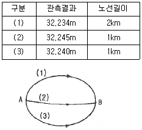
- 32.238m
- 32.239m
- 32.241m
- 32.246m
(정답률: 53%)
62. 삼각망의 조정계산에서 만족시켜야 할 기하학적 조건이 아닌 것은?
- 삼각형의 내각의 합은 180°이다.
- 삼각형의 편각의 합은 560°이어야 한다.
- 어느 한 측점 주위에 형성된 모든 각의 합은 반드시 360°이어야 한다.
- 삼각형의 한 변의 길이는 그 계산 경로에 관계없이 항상 일정하여야 한다.
(정답률: 53%)
63. 기지점의 지반고 86.37m, 기지점에서의 후시 3.95m, 미지점에서의 전시 2.04m일 때 미지점의 지반고는?
- 80.38m
- 84.46m
- 88.28m
- 92.36m
(정답률: 54%)
64. 측량 장비 중 두 점 간의 각과 거리를 동시에 관측할 수 있는 장비는?
- 토털스테이션(total station)
- 세오돌라이트(theodolite)
- GPS(global positioning system) 수신기
- EDM(electro-optical distance measuring)
(정답률: 80%)
65. 삼각망 내 어떤 삼각형의 구과량이 10ʺ일 때, 그 구면삼각형의 면적은? (단, 지구의 반지름은 6370km이다.)
- 1047km2
- 1574km2
- 1967km2
- 2532km2
(정답률: 39%)
66. 삼변측량에서 cos∠A를 구하는 식으로 옳은 것은?
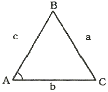
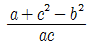
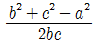
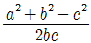
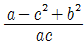
(정답률: 66%)
67. 우리나라의 평면직각좌표계에 대한 설명 중 틀린 것은?
- 축척계수는 0.9996이다.
- 원점의 위도는 모두 북위 38°이다.
- 투영원점의 가산수치는 X(N)에 대하여 600000m이다.
- 투영원점의 가산수치는 Y(E)에 대하여 200000m이다.
(정답률: 53%)
68. 측량에서 발생되는 오차 중 주로 관측자의 미숙과 부주의로 인하여 발생되는 오차는?
- 착오
- 정오차
- 부정오차
- 표준오차
(정답률: 74%)
69. 경중률에 대한 설명으로 옳은 것은?
- 경중률은 동일 조건으로 관측했을 때 관측횟수에 반비례한다.
- 경중률은 평균의 크기에 비례한다.
- 경중률은 관측거리에 반비례한다.
- 경중률은 표준편차의 제곱에 비례한다.
(정답률: 43%)
70. 각측량에서 기계오차의 소거방법 중 망원경을 정·반위로 관측하여도 제거되지 않는 오차는?
- 시준선과 수평축이 직교하지 않아 생기는 오차
- 수평 기포관축이 연직축과 직교하지 않아 생기는 오차
- 수평축이 연직축에 직교하지 않아 생기는 오차
- 회전축에 대하여 망원경의 위치가 편심되어 생기는 오차
(정답률: 38%)
71. 등고선의 성질에 대한 설명으로 옳지 않은 것은?
- 낭떠러지와 동굴에서는 교차한다.
- 등고선 간 최단거리의 방향은 그 지표면의 최대 경사 방향을 가리킨다.
- 등고선은 도면 안 또는 밖에서 반드시 폐합하며 도중에 소실되지 않는다.
- 등고선은 경사가 급한 곳에서는 간격이 넓고, 경사가 완만한 곳에서는 간격이 좁다.
(정답률: 68%)
72. 직사각형의 면적을 구하기 위하여 거리를 관측한 결과, 가로＝50.00±0.01m, 세로＝100.00±0.02m이었다면 면적에 대한 오차는?
- ±0.01m2
- ±0.02m2
- ±0.98m2
- ±1.41m2
(정답률: 57%)
73. 어느 정사각형 형태의 지역에 대한 실제 면적이 A, 지형도상의 면적이 B일 때 이 지형도의 축척으로 옳은 것은?
- B : A
- √B : A
- B : √A
- √B : √A
(정답률: 50%)
74. 그림과 같이 편각을 측정하였다면 DE의 방위각은? (단, AB의 방위각은 60°이다.)
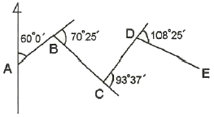
- 145° 13ʹ
- 147° 13ʹ
- 149° 32ʹ
- 151° 13ʹ
(정답률: 55%)
75. 공간정보의 구축 및 관리 등에 관한 법률의 제정목적에 대한 설명으로 가장 적합한 것은?
- 국토의 효율적 관리와 해상교통의 안전 및 국민의 소유권 보호에 기여함
- 국토개발의 중복 배제와 경비 절감에 기여함
- 공간정보 구축의 기준 및 절차를 구정함
- 측량과 지적측량에 관한 규칙을 정함
(정답률: 60%)
76. 측량업자로서 속임수, 위력, 그 밖의 방법으로 측량업과 관련된 입찰의 공정성을 해친 자에 대한 벌칙 기준은?
- 3년 이하의 징역 또는 3천만원 이하의 벌금
- 2년 이하의 징역 또는 2천만원 이하의 벌금
- 1년 이하의 징역 또는 1천만원 이하의 벌금
- 300만원 이하의 과태료
(정답률: 63%)
77. 공공측량 작업계획서에 포함되어야 할 사항이 아닌 것은?
- 공공측량의 사업명
- 공공측량 성과의 보관 장소
- 공공측량의 위치 및 사업량
- 공공측량의 목적 및 활용 범위
(정답률: 58%)
78. 측량기준점 중 국가기준점에 해당되지 않는 것은?
- 위성기준점
- 통합기준점
- 삼각점
- 공공수준점
(정답률: 42%)
79. 다음 중 기본측량성과의 고시내용이 아닌 것은?
- 측량의 종류
- 측량의 정확도
- 측량성과의 보관 장소
- 측량 작업의 방법
(정답률: 40%)
80. 성능검사를 받아야 하는 측량기기와 검사주기로 옳은 것은?
- 레벨：1년
- 토털 스테이션：2년
- 지피에스(GPS) 수신기：3년
- 금속관로 탐지기：4년
(정답률: 76%)
따라서,
종단현의 길이 = 200 x 60 x (π/180) = 6.671m
따라서, 정답은 "6.671m" 이다.